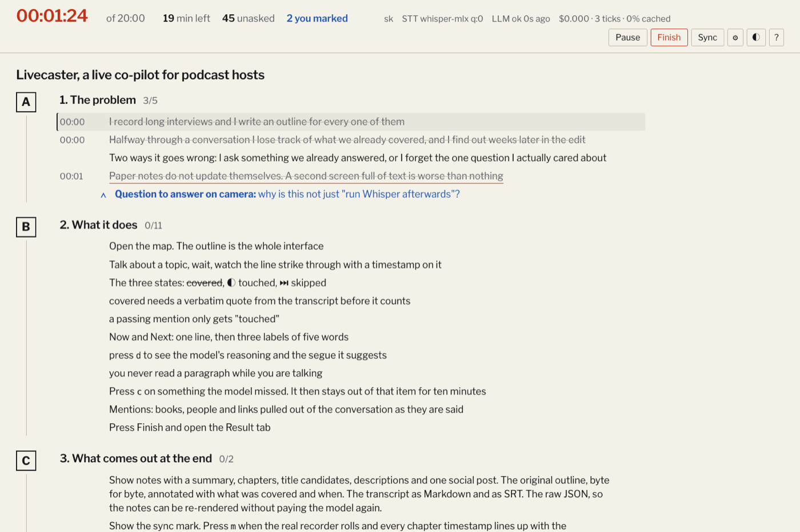

You point it at the Markdown you already wrote
Headings, bullets, nested bullets, question lines, whole paragraphs — whatever your episode plan already looks like. One pass over it fills in suggested questions and trigger phrases per topic while the map is already on screen, so it does not hold you up.
Bold a line and it becomes a must-ask: the one question you actually cared about, tracked until you have answered it.
Speech is transcribed where you are sitting
Parakeet runs locally at about a quarter of a second per utterance. Audio never leaves the machine and the WAV backups are written beside the session. What crosses the network is the outline text, the transcript text, and the state derived from them.
The plan gets smaller as you work
Covered lines take a single cut with the time beside them. A section you have finished folds to one line, in place, so what is left is what you can see. Nothing ever reorders itself and nothing ever scrolls on its own.

Something three sections away just became reachable
The guest mentions their headset. A topic you had not got to yet is the one thing set large and in red, with the reason it lit up and a sentence you could use to get there from wherever the conversation actually is.
“You mentioned you record on a headset — that is actually the thing that breaks this…”
The paperwork is already written
A slower, better model reads the whole transcript and writes the notes in the language of the podcast: a summary, what was covered and what was not, chapters with timestamps, titles and descriptions to choose from, a social post, quotes, and mentions with links — or an explicit link TODO where it could not find one, because it says so instead of inventing a URL.
Click any block to copy it. The social post arrives without its heading, ready to paste.